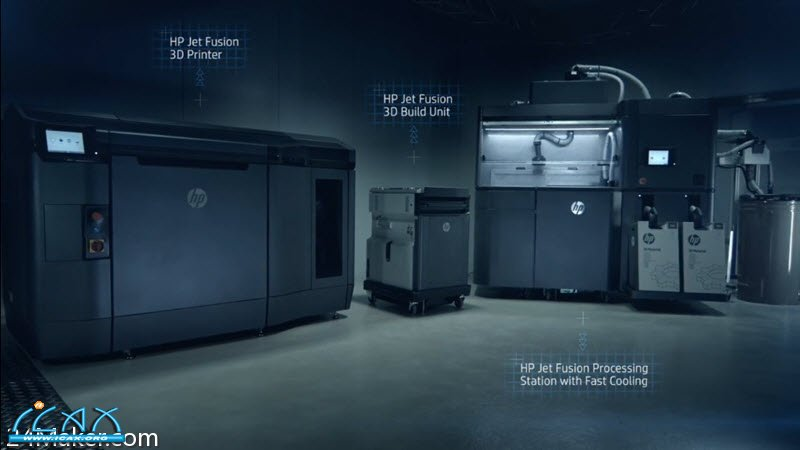

西门子与惠普携手推动3D打印在产品开发和工业生产中的应用
惠普的Multi Jet Fusion 3D打印技术与Siemens PLM Software的旗舰软件NX集成，用于产品开发和制造
专为惠普Multi Jet Fusion开发的西门子NX增材制造软件模块已经正式通过惠普认证以用于生产级工业3D打印
双方深化合作伙伴关系，为下一代惠普Multi Jet Fusion 3D打印机制定技术路线图
在长期合作关系的基础上，Siemens PLM Software开发的增材制造（AM）模块已获得惠普公司的认证，该模块将会加速3D打印在生产过程中的应用。用于HP Multi Jet Fusion的Siemens NX AM这一全新的软件模块将把Siemens PLM Software的“端到端”、从设计到生产的解决方案扩充至增材制造领域。NX™ 软件模块使客户能够在单一软件环境中为其惠普3D打印项目开发和管理零部件，避免昂贵耗时的数据转换过程，以及第三方工具，从而提高从设计到成品的整体工作效率。西门子和惠普也在调整未来技术路线图，使设计人员和工程师能够重新构思设计产品，充分利用惠普的3D打印能力，避免传统制造的限制，以更快的速度和更好的成本效益生产新产品，从而为工业3D打印在创新设计领域的应用提供显著的机会。

西门子的新软件模块使NX客户能够用极少的步骤将惠普Multi Jet Fusion 3D打印零件的设计、优化、仿真和打印任务的准备，以及检验过程集成到一个受控环境中。用户现在可以将多个3D零件模型加载到NX中，自动组合嵌套并将其提交给惠普3D打印机，所有这些工作将全部集成在一个统一环境中，以极少的步骤就可完成。在未来，通过NX和Multi Jet Fusion集成，软件应用或工序之间不再需要数据转换，从材料特性到独立体素层面实现前所未有的控制水平。这将实现对不同的材质、密度、强度和摩擦系数以及热、电和传导特性零件的3D打印。
惠普公司3D打印商业拓展及开发全球负责人Michelle Bockman表示：“惠普和西门子将最优秀的设计和制造工作流程软件进行集成，以实现最佳的3D打印，为制造在速度、质量和经济性上满足当今数字化工业时代要求的新产品创造可能。我们期待与西门子加强合作，通过Multi Jet Fusion 3D打印解决方案的体素级设计能力，不断满足客户日益提高的需求。”
西门子和HP有一个共同目标，那就是增材制造产业化。备受赞誉的惠普Multi Jet Fusion 3D打印解决方案是可以直接用于生产的商用系统，在打印高精度1零件时，能够以当前3D打印系统10倍2的速度和一半3的成本完成打印。通过将Siemens PLM Software的涵盖产品生命周期管理（PLM）和电子设计自动化（EDA）软件、集成自动化与制造作业管理的完整解决方案与惠普的3D打印解决方案结合，增材制造能够成为一个真正的工业生产过程。两家公司将继续协作，同时联合其它行业领导者，共同打造一个重要的合作伙伴生态系统，最终实现使增材制造成为一种工业化生产方法的愿景。
Siemens PLM Software制造工程软件业务高级副总裁Zvi Feuer指出：“西门子视增材制造为变革性的数字力量，它促使公司重新设计其工厂和产品以提升业绩水平。由于现代企业愈发期望加快产品上市速度、差异化产品性能、简化生产及供应链作业并实施新的业务模式，对于西门子来说，加深与惠普之间的伙伴关系并推动惠普的创新型3D打印技术变得尤为关键。随着产品不断复杂化和个性化，我们期待由多种材料构成、可调机械性能和集成电子的下一代3D打印零件的诞生。”
1、基于喷砂试验后的尺寸精度不低于±0.2毫米/0.008英寸。更详细地了解材料规格参见 https://hp.com/go/3Dmaterials 。基于下列机械属性：抗拉强度为50，系数Z为1900，系数XY为1900。用PA-12材料进行ASTM标准测试。
2、内部测试及仿真结果显示，HP Jet Fusion 3D打印解决方案的平均打印速度比2016年4月市面上出售的价格区间为10万美元至30万美元的FDM和SLS打印机快10倍。测试变量：零件数量 -堆积密度为在上述竞品仪器的相同数量零件的20%的HP Jet Fusion 3D打印零件1满桶；零件重量：30克；层厚：0.1毫米/0.004英寸。通过2017年推出的具有快速冷却功能的惠普Jet Fusion 3D加工站进行快速冷却。与价格区间在10万美元到30万美元的SLS打印机解决方案的推荐制造时间（2016年4月测试结果）相比，具有快速冷却功能的惠普Jet Fusion 3D加工站缩短了零件冷却时间。FDM不适用。
3、内部测试及公开数据显示，惠普Jet Fusion 3D打印解决方案的平均单位零件打印成本仅为2016年4月市面上出售的价格区间在10万美元到30万美元的具备可比性的FDM和SLS打印解决方案的一半。成本分析依据：制造商推荐的标准解决方案配置价格、物资价格以及维护成本。成本标准：用制造商推荐的粉末可重用性比例，以10%的堆积密度打印重30克的零件，一周打印5天，每天打印1到2桶。
关于西门子在中国：
西门子股份公司是全球领先的技术企业，创立于1847年，业务遍及全球200多个国家，专注于电气化、自动化和数字化领域。作为世界最大的高效能源和资源节约型技术供应商之一，西门子在高效发电和输电解决方案、基础设施解决方案、工业自动化、驱动和软件解决方案，以及医疗成像设备和实验室诊断等领域占据领先地位。西门子自1872年进入中国，140余年来以创新的技术、卓越的解决方案和产品坚持不懈地对中国的发展提供全面支持，并以出众的品质和令人信赖的可靠性、领先的技术成就、不懈的创新追求，在业界独树一帜。2016财年（2015年10月1日至2016年9月30日），西门子在中国的总营收达到64.4亿欧元，拥有约31000名员工。西门子已经发展成为中国社会和经济不可分割的一部分，并竭诚与中国携手合作，共同致力于实现可持续发展。